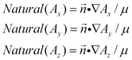
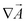
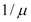
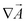
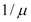
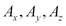

|
Boundary Conditions |

  
|
|
Boundary Conditions |
|
In converting the equation to a divergence, we have modified the interface conditions. The natural boundary condition for each component equation of (2.10) is now the normal component of the argument of the divergence:
(2.11) 
The default interior interface condition assumes component-wise continuity of the surface terms across the interface.
Of the conditions (2.2) required by Maxwell’s equations at an interface, the first describes the tangential components of  , which by (2.3) involve the normal components of . Eq. (2.11) shows that these components scale by , satisfying the tangential condition on
, which by (2.3) involve the normal components of . Eq. (2.11) shows that these components scale by , satisfying the tangential condition on  .
.
The second condition is satisfied by the fact that the variables  have only a single representation on the boundary, requiring that their tangential derivatives, and therefore the normal component of  , will be continuous across the interface.
, will be continuous across the interface.
In all cases it is important to keep the  attached to the term to preserve the correct interface jump conditions.
attached to the term to preserve the correct interface jump conditions.
Page url: index.html?boundary_conditions2.html